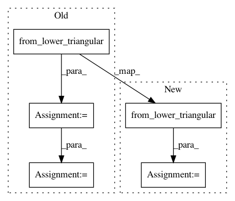

9419d215150bcb2679d5047ab53f88139702ac6e,dipy/reconst/tests/test_dki.py,,_wls_iter,#Any#Any#Any#Any#Any#,113
Before Change
w = np.exp(np.dot(ols_fit, log_s))
result = np.dot(np.linalg.pinv(design_matrix * w[:, None]), w * log_s)
D=result[:6]
tensor=from_lower_triangular(D)
MeanD_square=((tensor[0,0]+tensor[1,1]+tensor[2,2])/3.)**2
K_tensor_elements=result[6:21]/MeanD_square
return decompose_tensors(tensor, K_tensor_elements, min_diffusivity=min_diffusivity)
After Change
D = result[:6]
// tensor=from_lower_triangular(D)
// new line
evals, evecs = decompose_tensor(from_lower_triangular(D),
min_diffusivity=min_diffusivity)
// MeanD_square=((tensor[0,0]+tensor[1,1]+tensor[2,2])/3.)**2
// new_line:
MeanD_square = (evals.mean(0))**2
In pattern: SUPERPATTERN
Frequency: 3
Non-data size: 5
Instances
Project Name: nipy/dipy
Commit Name: 9419d215150bcb2679d5047ab53f88139702ac6e
Time: 2015-07-08
Author: rafaelnh21@gmail.com
File Name: dipy/reconst/tests/test_dki.py
Class Name:
Method Name: _wls_iter
Project Name: nipy/dipy
Commit Name: 81e6b8c24d0c07a4034c523751221e7951c00b5d
Time: 2013-07-21
Author: arokem@gmail.com
File Name: dipy/reconst/dti.py
Class Name:
Method Name: nlls_fit_tensor
Project Name: nipy/dipy
Commit Name: bdf67bc292175a81c63deca27a2056d566db050b
Time: 2013-07-21
Author: arokem@gmail.com
File Name: dipy/reconst/dti.py
Class Name:
Method Name: restore_fit_tensor